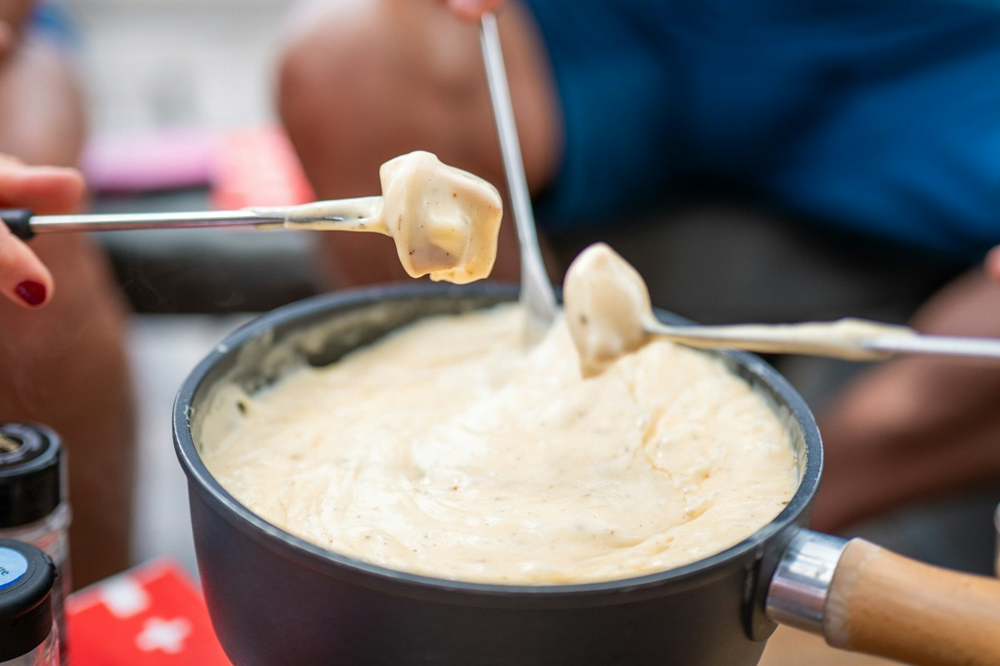

Swiss Cheese Fondue
Gruyere and Vacherin melted into white wine with a whisper of kirsch, kept smooth by a spoon of cornflour.

Fondue splits for one reason: the cheese is heated too fast and the fat separates from the protein. Everything in this method exists to stop that. The cheese is tossed in cornflour before it goes anywhere near the pot, the wine goes in cold, the heat stays low, and the cheese is added a handful at a time so the emulsion is never asked to absorb more than it can. Get that right and the pot stays glossy from the first dip to the crust at the bottom.
Ingredients
Quantities scale automatically. Cooking times stay the same.
For the fondue
To dip
Equipment
- Caquelon or heavy enamelled pot
- Fondue burner
- Long fondue forks
- Wooden spoon
Method
-
1
Toss the cheese in cornflour
Combine both cheeses in a bowl and toss thoroughly with the cornflour until every shred is dusted. The starch is what holds the emulsion together once the fat renders, and it is the single most reliable defence against a split pot.
-
2
Prepare the pot
Rub the cut garlic hard around the inside of the caquelon, then leave it in. Pour in the wine and the lemon juice and warm over medium-low until it steams and shows small bubbles at the edge, but do not let it boil.
-
3
Add the cheese gradually
Add the cheese one large handful at a time, stirring in a slow figure of eight with a wooden spoon. Wait until each addition has completely disappeared before adding the next. Rushing this is the other way fondue splits.
-
4
Season and finish
Once smooth and glossy, stir in the kirsch, a scrape of nutmeg and plenty of black pepper. The texture should coat a fork thickly and fall from it in a ribbon; loosen with a splash of warm wine if it is too tight.
-
5
Move to the burner
Set the pot over a low flame at the table. Keep it just below a simmer and keep stirring as people dip, so the base never scorches.
-
6
Eat, and save the crust
Spear each bread cube through the soft side and out through the crust so it holds, then stir it through the cheese. When the pot is nearly empty a golden crust forms on the base, called la religieuse; lift it out and share it.
Cook’s tips
- Use day-old bread. Fresh bread is too soft and disintegrates off the fork halfway to your mouth.
- Never let the fondue boil. Above a gentle simmer the proteins tighten, the fat pools on top and the pot turns grainy.
- If it does split, take it off the heat and whisk in a slurry of a teaspoon of cornflour in a tablespoon of lemon juice. It will usually come back together.
Variations
- Moitie-moitie is the classic Fribourg half-and-half of Gruyere and Vacherin, which is what this recipe is.
- Stir a spoon of wholegrain mustard or a handful of sauteed mushrooms through at the end.
- For a wine-free pot, use strong vegetable stock with an extra teaspoon of lemon juice for the acidity the cheese needs.
Storage and make-ahead
Fondue is a cook-and-eat dish and does not keep well; reheated cheese usually splits. Leftovers can be refrigerated for 2 days and used as a sauce, melted gently over low heat with a splash of milk, or spread on bread and grilled.
Nutrition per serving
| Calories | 784 kcal |
|---|---|
| Protein | 41 g |
| Carbohydrates | 38 g |
| Fat | 46 g |
| Fibre | 2 g |
| Sugar | 3 g |
| Sodium | 1120 mg |
Nutrition is estimated from ingredient averages and will vary with brands and portioning.